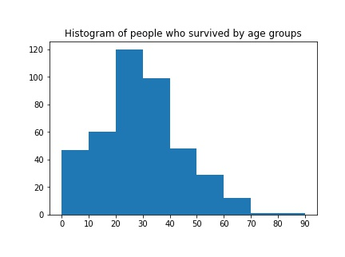
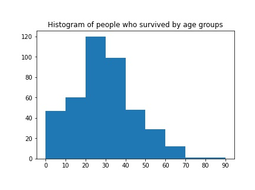

The bar graph shows the number of passengers that survived or perished from each embarking location. (Survived is 1 and perished is 0)
This pie graph shows the percentage of survivors from each embarking location: Cherbourg, Queenstown and South Hampton.
Age
 

These histograms show survival and perishing counts by age.
Passenger Class (Pclass)
This heatmap helps determine if the higher-class passengers (Class 1) had a higher rate of survival than the lower classes (Class 2 or 3). It implies that passenger class contributed to a passenger’s survival. (Survived is 1 and perished is 0)
Survival rate of males is around 20%, whereas women is around 75%. Passenger gender played an important role in determining if one was going to survive (1) or perish (0).